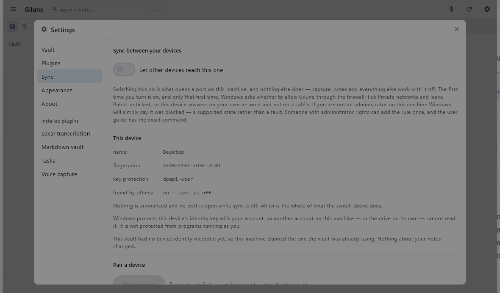

Sync
Your devices hand their notes to each other directly, over your own network. There is no account, no server, and nothing of yours passes through anybody else's machine.
What syncing means here
Two devices that you have introduced to each other exchange what you have written — notes, recordings, edits — straight across the network you are both on. Nobody else is involved. Nothing is uploaded, and there is no service to sign up for, go down, or change its terms.
Every device keeps a full copy. Your phone is not a window onto your desktop; it holds the whole vault, and so does the desktop. Either one on its own is the entire notebook.
Turning it on
Open Settings from the top bar, choose Sync, and turn on Let other devices reach this one. That is the whole of it.

That switch is the only thing in Gilune that opens a port on your machine, and nothing else does it. With sync off, everything else works exactly as it always did — writing, voice capture, transcription, tasks, search — and nothing on the network can reach the app at all. Sync is something you opt into, not something you switch off.
The switch is remembered. Once you have turned it on, Gilune comes back ready to reach your other devices every time it starts, without asking again — you turn it on once, not once per session. Turning it off is remembered just as firmly.
The Windows firewall prompt
The first time you turn sync on, Windows asks whether to allow Gilune through the firewall. It appears at that moment and only at that moment, because that is when Gilune first starts listening — you will never meet it while simply writing a note.
Tick Private networks and leave Public networks unticked. Private means the network at home or in the office that you already trust; public means the café and the airport, where you do not want the app answering strangers.
If you are not an administrator on this machine, Windows will not offer you the choice — it will simply tell you that Gilune was blocked, and sync will never find anything. Someone with an administrator account can add the rule once, in a terminal opened as administrator:
netsh advfirewall firewall add rule name="Gilune" dir=in action=allow program="%LOCALAPPDATA%\Gilune\Gilune.exe" enable=yes profile=privateThat is a one-off. Afterwards sync works for you without any further prompt.
Pairing two devices
Devices only talk to each other after you have introduced them, and you do that once per pair. There are two ways to do it, and they are the same introduction underneath — one of them just saves you typing.
With the six-digit code
- On one device, in Settings ▸ Sync, press Start pairing. It shows a six-digit code, and the address or addresses that device can be reached at.
- On the other device, on the same screen, find Enter a code from another device and type in one of those addresses and the code.
- Press Pair.
This works between any two devices, in either direction, always. It is the way that never depends on anything else being in place.
When more than one address is offered
A computer can be on several networks at once without knowing it — your own network, and the private ones that virtual machines, containers and VPNs quietly add. It cannot tell which of those your phone is on, so it does not guess: while a pairing code is open it lists every address it is reachable at, best first. The same list appears under This device on the Sync page, whether or not a pairing is open.
Type whichever one belongs to the network the other device is on. The first in the list is the best guess and is usually right; trying another costs nothing — a wrong address simply does not connect, and the code stays good until it expires. Scanning the QR skips the question entirely: the phone is handed every address the code carries and tries them in turn.
A code is good for one pairing only, it expires after a few minutes, and a few wrong tries cancels it. If any of those happen, nothing is broken and nothing is at risk — press New code and start again. A code that could be guessed at forever would not be worth six digits.
With the QR code
While a code is open, the desktop shows the same introduction as a QR square beside the digits. On the phone, open its Sync screen and scan it. That is the whole difference: the same pairing, without typing an address and six digits into a phone.
The QR goes one way — the desktop shows it, the phone reads it. Two desktops pair with the code.
Making sure you paired with the right device
Under This device, each device shows a short fingerprint of its own: a handful of letters and digits, the same every time. After pairing, each device lists the other one with the fingerprint it saw during the introduction.
To check, put the two screens side by side: the fingerprint your desktop lists for the phone should be character-for-character the fingerprint the phone shows for itself, and the other way round. If they match, you paired with the device you meant to.
Finding devices automatically
Once sync is on, a device announces itself on the network it is connected to. Press Look for devices on the Sync page and everything that answers appears in a list — the ones you have already paired with, and any you have not.
Syncing uses this on its own, too. Gilune tries the address it already has for a device first, because that is by far the quicker of the two; only when that address no longer works does it go looking. So a device that has moved to a different address usually just works again, without you doing anything.
What gets announced is deliberately anonymous: a short fingerprint, and nothing else. Not the device's name, not the name of your vault, nothing about you and nothing about what you have written. Anyone else on the same network can tell that a Gilune device is there — that is true of anything that announces itself — but not whose it is or what it is called.
The name you actually see beside a device turns up only after the two of you have paired. Names are exchanged privately, between devices that already know each other.
What syncs
Everything, both ways. Every note, every recording, every edit you make on either side. Deletions travel too — delete a note on the phone and it goes from the desktop as well.
A note sometimes arrives a little before its recording does: the words are small and the audio is not, so the audio follows on behind. That is normal, and nothing is missing — the note fills in when the recording lands.
When it happens
The desktop listens the whole time the app is open, so anything another device sends arrives while you are working. If you want to push what you have just written without waiting, press Sync with devices now at the bottom of the Sync page.
The phone syncs when you open it, and again every time you come back to it. On top of that it checks in the background roughly every fifteen minutes, on Wi-Fi, when the battery is not low.
Fifteen minutes is a floor, not a promise. Android decides when background work actually runs and batches it up to save power, so a phone you are using is somewhere near that quarter of an hour, while a phone left in a pocket overnight can go considerably longer. Anything you want on the other device straight away, open the app — that is the path that happens in seconds.
Revoking a device
Beside each paired device is a Revoke button, and either device can do it to the other. It takes effect immediately: the device can no longer connect, and an exchange happening at that moment stops there and then.
Revoking is not an undo. Everything that device already sent you stays in your vault, exactly where it is. Revoking decides what happens next, not what already happened. Pairing that device again later is a new introduction, not a resumption of the old one.
A copied vault becomes a new device
Copy your vault folder to another machine, or restore it from a backup, and Gilune treats that machine as a new device with a history of its own. This is deliberate: two machines writing as though they were the same device would tread on each other's history, and the notes would be the thing that suffered.
It is also why one vault can end up showing two devices in the list. Gilune says so plainly on the Sync page when it happens, the original device is unaffected, and you can revoke whichever one you did not mean to have.
Starting again after a restored backup (phone)
Each device proves which device it is with a key that its phone or its computer keeps for it, locked away outside your vault. That key does not travel: restore a backup onto a new phone, reset the phone's secure storage, or move the app to another handset, and the proof comes across but the thing that unlocks it does not.
When that happens the phone's Sync page says so in as many words, and offers Reset sync on this phone. This button is on the phone only — a desktop in the same state tells you what is wrong on its own Sync page, and its identity is rebuilt by pairing again from scratch.
Pressing it throws away the identity this phone holds, its list of paired devices and its on-or-off setting, and enrols the phone afresh. It touches nothing in your vault: every note, recording and edit is exactly where it was. Your other devices will not recognise this phone afterwards, so pair each of them again — a new introduction, not an undo.
When something is not working
- Nothing is found at all. Many guest, hotel and office networks deliberately stop the devices on them from seeing one another. On a network like that, no amount of waiting will help and there is nothing wrong with Gilune. Put both devices on a network of your own, or turn on the phone's hotspot and use that.
- A device is found but will not connect. Check that sync is actually switched on over there, and that Gilune was allowed through the firewall on private networks on that machine.
- It used to work and now it does not. The other device's address has probably changed — routers hand out new ones from time to time. Read the current address off that device's Sync settings and type it into the address field on this one.
- A message says something is being held back. Gilune stops rather than accept something it cannot make sense of or verify, and it tells you what it was and why. Nothing is lost by this: once the problem clears, it picks up exactly where it left off.
Messages that are not a problem
Some of what the Sync page tells you is simply news. These are the ones that sound like faults and are not — nothing has stopped, and there is nothing to fix.
- A change referred to something from a device you removed. It was set aside, and nothing is lost. Something arrived that was about a device you have revoked — an edit to one of its notes, say — so there was nothing left for it to be about. What that device sent you before you revoked it stays in your vault, and everything else carries on as normal.
- A note's text file could not be read. Gilune left the note alone rather than rewriting it with a gap where the words should be. If you moved or renamed the file with another app, put it back and it reappears. Nothing was lost: Gilune's own record of the note is untouched, and the rest of your vault is unaffected.
- Something from another device is waiting for the rest of its history. Two devices met in the wrong order, which happens. It sorts itself out at the next sync without anybody doing anything.
- Something a newer version wrote came through. This device kept it exactly as it arrived and passed it on to your other devices unread. Nothing is lost; it becomes readable here when this device is running that version too.